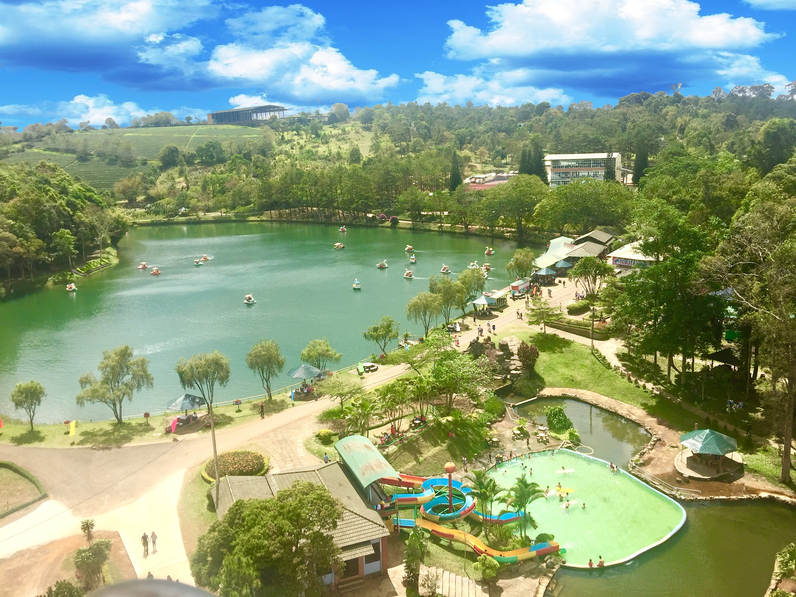
Bảo Lộc
Thác Đambri
Điểm biểu tượng của Bảo Lộc, phù hợp làm ảnh mở đầu cho toàn bộ cụm địa phương.
Cụm cao nguyên phía nam Lâm Đồng có khí hậu mát, đồi chè, thác nước, đèo Gia Bắc và nhiều điểm nghỉ dưỡng nhẹ nhàng. Trang này viết theo kiểu gom cụm để đi từ Bảo Lộc xuống Bảo Lâm rồi nối sang Di Linh rất tự nhiên.
Bộ địa danh này giúp trang Bảo Lộc - Bảo Lâm - Di Linh có đủ chiều sâu, từ cảnh quan tự nhiên tới điểm dừng chân nghỉ dưỡng.

Điểm biểu tượng của Bảo Lộc, phù hợp làm ảnh mở đầu cho toàn bộ cụm địa phương.
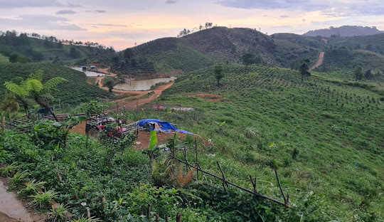
Vị trí ngắm cảnh, rất hợp cho nội dung trekking nhẹ và săn mây buổi sớm.

Không gian thư giãn trung tâm, phù hợp đi bộ, chụp ảnh và dạo cảnh.
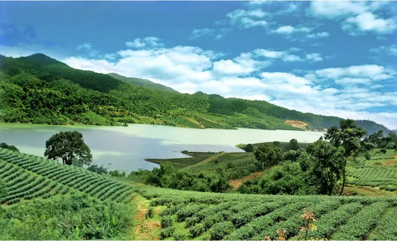
Nhấn mạnh bản sắc trà Bảo Lộc, dễ lên hình và dễ viết nội dung trải nghiệm.
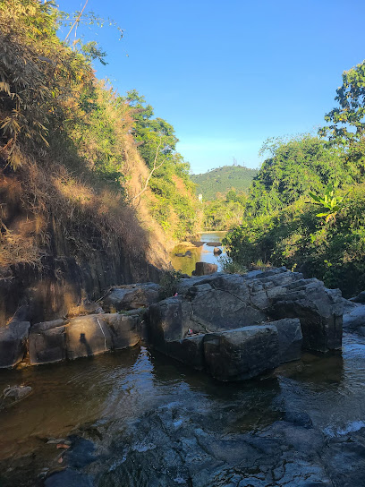
Một điểm thác tự nhiên phù hợp mở rộng bộ ảnh địa phương phía nam thành phố.
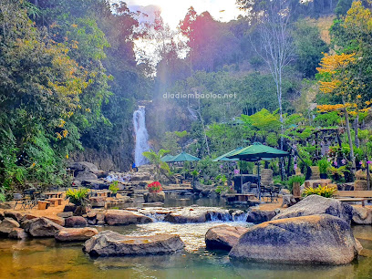
Chi tiết lạ để làm nội dung khác biệt cho khu vực Đại Lào và ven đô.
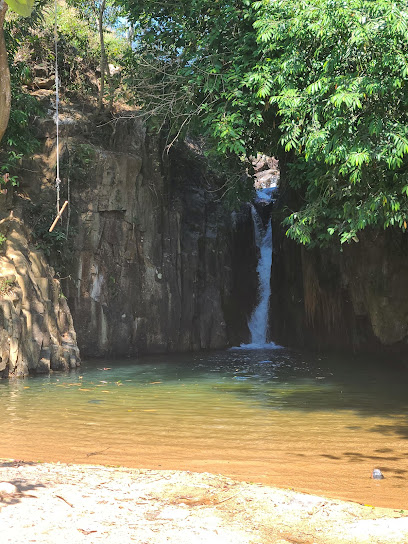
Không gian sinh thái yên bình, phù hợp cho chuyến đi ngắn cuối tuần.
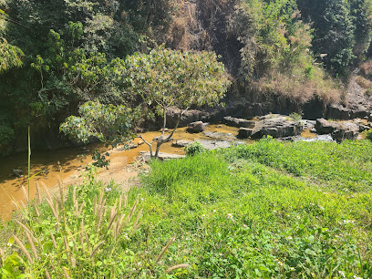
Điểm mới để tăng độ dày cho tuyến du lịch và làm phong phú danh sách địa danh.
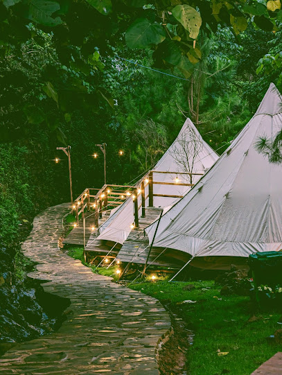
Phù hợp nội dung ảnh thiên nhiên và hành trình khám phá ngoài trời.
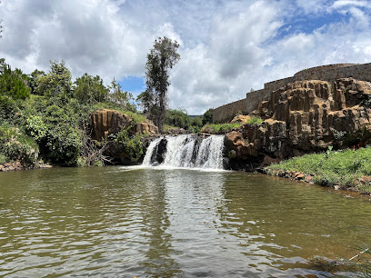
Điểm nhấn Bảo Lâm để bổ sung các tuyến sinh thái ít người biết hơn.
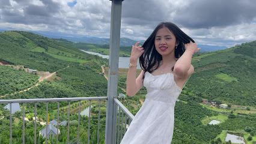
Phù hợp nội dung nghỉ dưỡng, cắm trại và trải nghiệm nông trại.
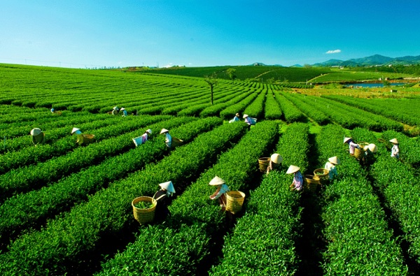
Có thể nối tuyến giữa các thác, suối và farmstay để tạo thành một lịch trình trọn vẹn.
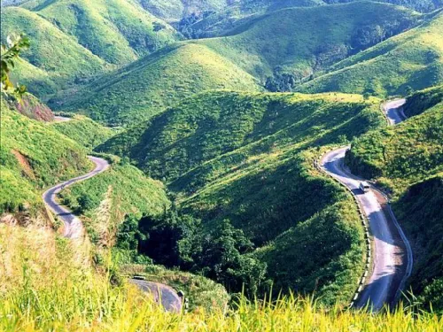
Đoạn đèo cao nguyên tạo nhịp chuyển rất đẹp khi nối Bảo Lộc xuống Di Linh.
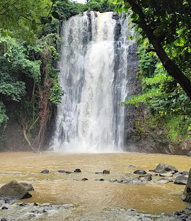
Điểm thác tiêu biểu của Di Linh, phù hợp mở thêm hành trình thiên nhiên ở phần cuối tuyến.
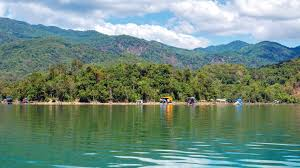
Mặt nước yên tĩnh, giúp cụm Bảo Lộc mở rộng có thêm một điểm dừng thư thái và ít ồn ào.
Hai tuyến dưới đây giúp bạn chuyển nội dung thành lịch trình cụ thể, dễ đọc và dễ mở rộng hơn.
Nội dung ngắn gọn để người xem dễ hình dung thời điểm đi, cách di chuyển và những điều nên chuẩn bị.
Buổi sáng và chiều muộn là thời điểm đẹp nhất để đi thác, ngắm mây và chụp ảnh đồi chè. Mùa mưa thì thác thường nhiều nước hơn.
Nên tách tuyến Bảo Lộc trung tâm và Bảo Lâm để đi gọn hơn, đặc biệt khi kết hợp thác, suối và farmstay trong cùng ngày.
Trang này có thể mở rộng thêm bài chi tiết cho từng thác, đồi chè và khu trải nghiệm sau khi bạn thay ảnh thật.